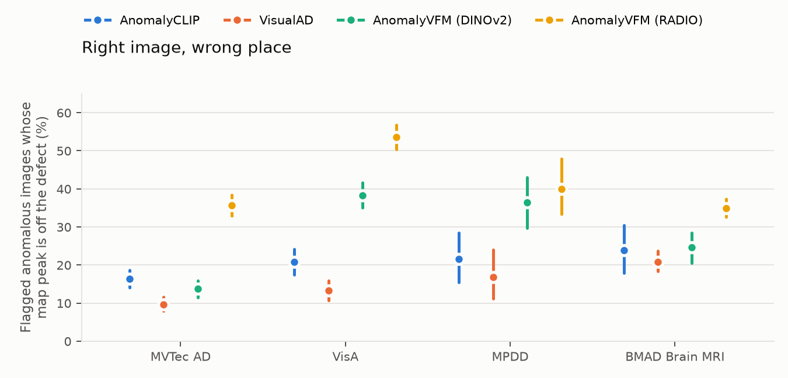
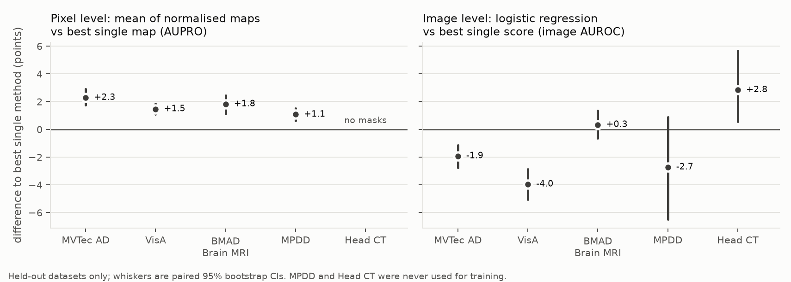

Abstract. Zero-shot anomaly detectors are usually reported one method at a time, as dataset averages. I evaluate one detector from each of three families (CLIP-based AnomalyCLIP, language-free VisualAD, and the vision-foundation-model detector AnomalyVFM with DINOv2 and RADIO backbones) plus two baselines under a single harness on five datasets: MVTec AD, VisA, MPDD, BMAD Brain MRI and Head CT. Every dataset-level number carries a 95% bootstrap confidence interval. AnomalyVFM-RADIO is the strongest image-level detector everywhere, but its anomaly map often peaks away from the defect it detected. The families miss different images and fail on different defect types; tiny defects and missing parts are blind spots. A fusion head trained leave-one-dataset-out does not beat the best single image score on industrial data, while a plain average of normalised anomaly maps improves localisation (AUPRO) on all four held-out datasets with masks, by 1.1 to 2.3 points.
A zero-shot anomaly detector should flag defects on objects it has never seen. Method papers compare dataset averages, each with its own protocol details, so it is hard to tell which defects a method misses, whether methods from different families fail on the same images, and whether their image scores and anomaly maps agree. I ask four questions: (1) which defect types and sizes each family misses; (2) how much performance drops from the standard industrial benchmarks to a harder industrial set and to medical images; (3) whether the families fail on different images and, if so, whether a learned fusion beats the best single method on held-out datasets; and (4) whether methods sometimes flag the right image for the wrong region.
Method papers such as AnomalyCLIP [1], AdaCLIP [2], FB-CLIP [3], VisualAD [4] and AnomalyVFM [5] evaluate on 9 to 18 industrial and medical datasets but report dataset averages, without breakdowns by defect attribute, cross-family complementarity or score-map consistency. BMAD [6] benchmarks medical anomaly detection with methods trained on normal images. Marzullo and Ranzini [7] test CLIP-based zero-shot detectors on brain MRI only; a 2026 study [8] compares WinCLIP and AnomalyCLIP, both CLIP-based. RobustAD [9] studies robustness of industrial detectors under shift. I found no work that runs detectors from three families under one harness, breaks failures down by defect attributes, measures complementarity and tests leave-one-dataset-out fusion.
Methods. AnomalyCLIP [1] learns object-agnostic text prompts on an auxiliary dataset (MVTec AD; VisA when testing on MVTec AD). VisualAD [4] uses the same frozen CLIP ViT-L/14 encoder with learned visual tokens and no text (VisA-trained; for VisA itself I trained the MVTec AD checkpoint, which is not released). AnomalyVFM [5] trains a decoder on synthetic anomalies only, on DINOv2 [10] or RADIO [11] features. Baselines: B1 scores CLIP prompts ("flawless" vs "damaged" object); B2 scores DINOv2 patches by mutual nearest neighbours among the other unlabelled test images, which is transductive, so it is reported separately. Data. MVTec AD [12] (1,725 test images), VisA [13] (2,162), MPDD [14] (458 metal parts under varied lighting and pose, used for testing only), BMAD Brain MRI [6] (3,715 BraTS 2021 slices) and Head CT [15] (200, image labels only). Protocol. No method or fusion head sees an image of the dataset it is scored on. Metrics: image AUROC, pixel AUROC, AUPRO up to 30% FPR [16] and F1-max, averaged over categories; every map is compared at 256×256. CIs are 95% percentile bootstrap intervals (1,000 resamples of images, stratified by category and label); pixel-metric CIs use per-image histograms.
| Method | MVTec AD | VisA | MPDD | BMAD Brain MRI | Head CT |
|---|---|---|---|---|---|
| AnomalyCLIP | 91.6 [90.0, 93.0] | 82.0 [80.3, 83.7] | 77.5 [73.0, 81.7] | 60.7 [58.2, 63.2] | 93.1 [89.1, 96.5] |
| VisualAD | 92.2 [90.9, 93.5] | 83.1 [81.5, 84.7] | 71.5 [66.6, 76.5] | 80.8 [78.9, 82.8] | 90.6 [86.1, 94.5] |
| AnomalyVFM (DINOv2) | 87.4 [85.6, 89.3] | 89.3 [88.0, 90.5] | 83.4 [79.2, 86.9] | 75.6 [73.4, 77.8] | 88.2 [83.3, 92.5] |
| AnomalyVFM (RADIO) | 96.4 [95.3, 97.5] | 92.9 [91.7, 93.9] | 85.7 [82.6, 88.9] | 87.3 [85.7, 88.7] | 94.0 [90.4, 97.1] |
| B1 CLIP prompt | 86.6 [84.5, 88.4] | 77.1 [75.4, 78.9] | 70.8 [65.7, 76.0] | 65.0 [62.7, 67.5] | 85.4 [79.9, 90.0] |
| B2 DINOv2 mutual NN | 92.5 [91.1, 94.0] | 82.7 [81.0, 84.4] | 64.8 [59.9, 70.1] | 74.4 [72.1, 76.5] | 61.1 [53.9, 68.3] |
| Method | MVTec AD | VisA | MPDD | BMAD Brain MRI | Head CT |
|---|---|---|---|---|---|
| AnomalyCLIP | 85.1 [83.9, 86.2] | 86.9 [85.7, 88.1] | 89.4 [88.1, 90.6] | 79.7 [78.8, 80.6] | — |
| VisualAD | 87.7 [86.5, 88.8] | 89.8 [88.7, 90.8] | 92.8 [92.1, 93.6] | 79.9 [79.1, 80.7] | — |
| AnomalyVFM (DINOv2) | 85.3 [84.0, 86.7] | 82.8 [81.2, 84.3] | 88.1 [87.0, 89.2] | 60.8 [59.4, 62.2] | — |
| AnomalyVFM (RADIO) | 87.2 [85.9, 88.3] | 88.3 [87.0, 89.6] | 88.4 [87.0, 89.7] | 74.4 [73.2, 75.4] | — |
| B1 CLIP prompt | 8.0 [7.1, 8.9] | 15.5 [14.0, 17.0] | 16.9 [14.5, 19.7] | 11.4 [10.8, 12.0] | — |
| B2 DINOv2 mutual NN | 90.6 [89.9, 91.4] | 83.0 [81.7, 84.4] | 86.1 [84.6, 87.7] | 78.7 [77.8, 79.5] | — |
AnomalyVFM-RADIO has the highest image AUROC on every dataset (on Head CT within AnomalyCLIP's CI), although it was never trained on a real benchmark image. Localisation tells a different story: VisualAD has the highest AUPRO among single-image methods on all four datasets with masks (on Brain MRI within AnomalyCLIP's CI), and the transductive B2 baseline is strongest on MVTec AD. B1 detects images reasonably but its maps are uninformative (AUPRO 8 to 17). On a T4, the methods need 0.11 to 0.55 s per image and at most 2.6 GB of GPU memory. My reproductions of the published MVTec AD and VisA numbers, with every gap above 2 points explained, are in the repository's log.

Heads are trained leave-one-dataset-out over MVTec AD, VisA and BMAD Brain MRI, with hyperparameters from an inner leave-one-dataset-out on the training datasets; MPDD and Head CT are never used for training. Features are put on a common scale by a quantile transform fitted on training data only. Image level (16 features: each detector's own score and three scores read off its map): logistic regression is worse than RADIO alone on MVTec AD (−1.9 [−2.8, −1.1]) and VisA (−4.0 [−5.0, −2.9]), not significantly different on MPDD and Brain MRI, and better only on Head CT (+2.8 [+0.5, +5.7]); boosted trees are worse still. Pixel level: the mean of the four normalised maps beats the best single map on every held-out dataset with masks (Figure 2); logistic regression learns near-equal weights and matches it, so the gain comes from averaging rather than learning.

| Head | MVTec AD | VisA | BMAD Brain MRI | MPDD |
|---|---|---|---|---|
| Best single map (chosen by training AUPRO) | 87.7 [86.5, 88.8] — visualad | 89.8 [88.7, 90.8] — visualad | 79.9 [79.1, 80.7] — visualad | 92.8 [92.1, 93.6] — visualad |
| Mean of normalised maps | 89.9 [88.9, 91.0] (+2.3 [+1.7, +2.9]) | 91.2 [90.3, 92.1] (+1.5 [+1.1, +1.9]) | 81.8 [80.7, 82.7] (+1.8 [+1.1, +2.5]) | 93.9 [93.3, 94.5] (+1.1 [+0.6, +1.5]) |
| Logistic regression on maps | 90.0 [88.9, 91.0] (+2.3 [+1.8, +2.9]) | 91.3 [90.4, 92.2] (+1.5 [+1.1, +1.9]) | 81.9 [80.8, 82.8] (+1.9 [+1.2, +2.5]) | 93.9 [93.3, 94.5] (+1.1 [+0.6, +1.5]) |
A Gradio app on Hugging Face Spaces (ZeroGPU) runs all four detectors on an uploaded photo and shows their maps, the fused map and a per-method verdict against thresholds set at 5% false alarms on normal MPDD images. A request takes 9.5 to 18.5 s end to end, of which 0.6 to 1.3 s is model time.
Each method was run once, so CIs cover image sampling but not training randomness. Fusion has only three training datasets, so hyperparameters are chosen on one-versus-one splits. Medical coverage is thin: two datasets, one with masks, and Head CT has 200 images. The demo's verdicts are calibrated on metal parts; for very different objects the maps are more informative.